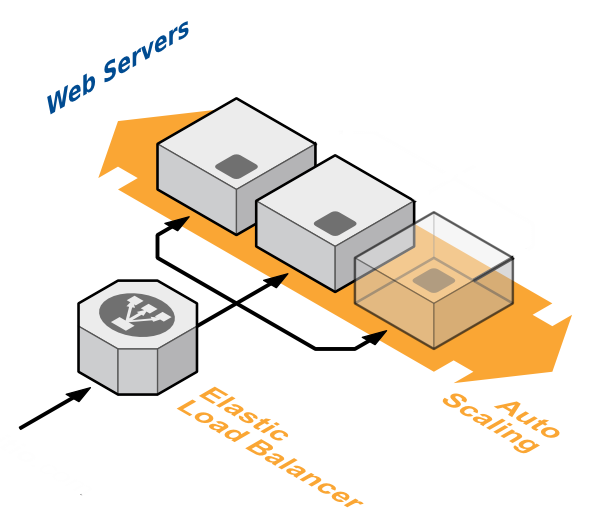

Povídání pro Tkalce na webu — Michal Valoušek — @msgre
https://github.com/msgre/aws-talk
"Cloud Computing", by definition, refers to the on-demand delivery of IT resources and applications via the Internet with pay-as-you-go pricing.
Jak provozujete svou webovou aplikaci?
EC2
Elastic Cloud Computing
EC2
Typy instancí
- General Purpose
- Compute Optimized
- Memory Optimized
- Storage Optimized
- GPU Instances
EC2
Operační systém
- Amazon Linux
- Red Hat Linux
- Ubuntu Server
- Debian Linux
- Windows Server
EC2
Fakturace
Platí se za hodinu provozu
- On-Demand
- Reserved
- Spot instances
EC2
Hodina provozu instance m3.medium
| On-Demand | 1.65 Kč | |
| Reserved | 1.35 Kč | 3-letá předplacenka |
| Spot instances | 0.22 Kč |
EC2
Dömo
EC2
Regiony, zóny

EC2
Disky
- Instance store
- EBS (Elastic block store)
EC2
Disky – Instance store
- disk přímo na serveru
- nejde měnit jeho parametry
- nejsou persistentní
- start systému do 5 minut
EC2
Disky – EBS
- síťové disky
- parametrizovatelné (velikost, typ, IOPS)
- persistentní
- start systému do 1 minuty
EC2
Dömo
EC2
AMI – Amazon Machine Images
- Operační systém
- Architektura (32/64 bit)
- Typ virtualizace (PV/HVM)
- Root disk
- Region
- Launch permissions
EC2
Životní cyklus instance

EC2
Životní cyklus instance – Zvláštnosti
- Start/Stop mění IP adresy i hostname
- Reboot ponechává instanci na stejném železe
- I za vypnutý stroj se platí (EBS)
Jepice!
EC2
Elastic IP
- Až 5 fixních IP přiřazených k AWS účtu
- Zdarma, pokud je EIP přiřazena k instanci
- Využití pro load balancery, IoT, apod.
EC2
ELB – Elastic Load Balancer
EC2
Automatické škálování
-
Launch Configuration
Parametry stroje, který se má automaticky nahazovat -
Auto Scaling groups
Parametry autoškálování (limity, podmínky)
EC2
Security groups
- Každá EC2 instance je zařazena minimálně do defaultní SG
- Firewall pravidla
- Protokol – TCP, UDP, ICMP
- Port – jeden konkrétní nebo rozsah
- Zdroj – odkudkoliv, z konkrétní IP, z jiné SG
RDS
Relational Database Service
RDS
Podporované databáze
- MySQL
- Oracle
- Microsoft SQL Server
- PostgreSQL
RDS
Fakturace
Platí se za hodinu provozu, I/O operace, objem dat
- On-Demand
- Reserved
ElastiCache
ElastiCache
Podporované technologie
- Memcached
- Redis
ElastiCache
Fakturace
Platí se za hodinu provozu *
- On-Demand
- Reserved
Route53
Route53
- Registrace domén (Gandi)
- DNS
- Health checks
Route53
DNS
- propagace změn do 60 vteřin
- Záznamy – A, AAAA, CNAME, MX, NS, PTR, SOA, SPF, SRV, TXT
- Aliasy – přímé propojení na vybrané služby AWS
- Routování – simple, weightened, latency based, failover, geolocation
CloudFormation
CloudFormation
- JSON šablona
- Zdroje AWSka (EC2 mašiny, RDS databáze, LB, ...) a vztahy mezi nimi
- Parametry získané od uživatele
- Pomocné struktury
CloudFormation
Podporované objekty
Auto Scaling, Amazon CloudFront, AWS CloudWatch, Amazon DynamoDB, Amazon EC2, Amazon ElastiCache, AWS Elastic Beanstalk, AWS Elastic Load Balancing, AWS Identity and Access Management, Amazon RDS, Amazon Redshift, Amazon Route 53, Amazon S3, Amazon SimpleDB, Amazon SNS, Amazon SQS, Amazon VPC
CloudFormation
CLI – Command Line Interface
CLI – Command Line Interface
$ aws ec2 describe-instances
{
"Reservations": [
{
"Instances": [
{
"Monitoring": {
"State": "disabled"
},
"PublicDnsName": null,
"State": {
"Code": 80,
"Name": "stopped"
},
...
Tipy
- Store no application state on your servers
- Disable SSH access to all servers
- Servers are ephemeral, you don't care about them. You only care about the service as a whole
- Automate everything
- Use tags!
- Use reserved instances to save big $$$
- Scale horizontally
- Your application may require changes to work on AWS
- Make sure AWS is right for your workload